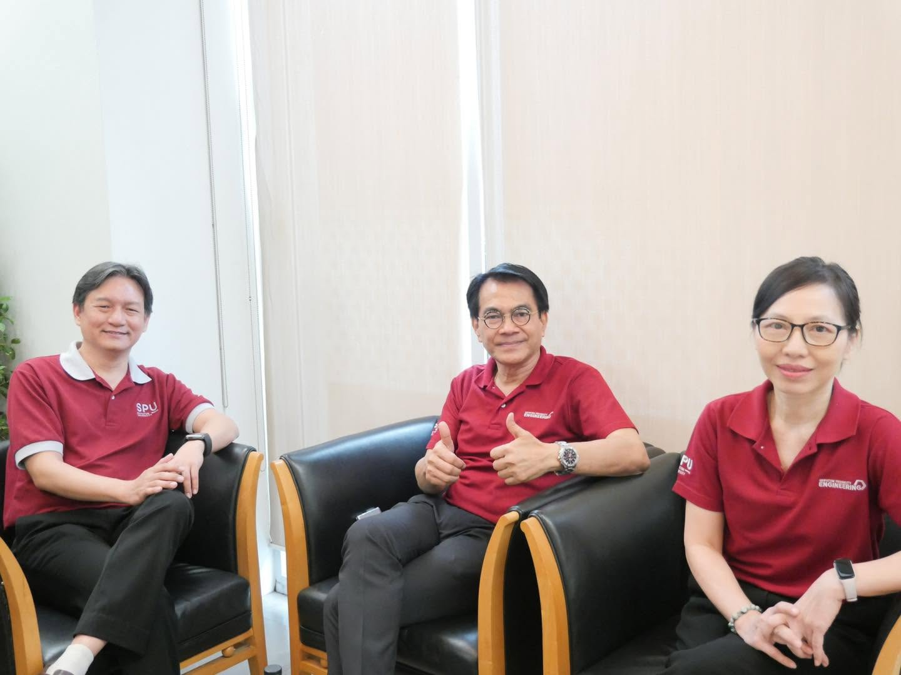

พื้นที่เรียนรู้ BIM ของนักศึกษาวิศวกรรมโยธา
จากความรู้ในห้องเรียน สู่ประสบการณ์ที่ได้ลงมือทำจริง
ด้วยวิสัยทัศน์ของคณาจารย์ สาขาวิชาวิศวกรรมโยธา คณะวิศวกรรมศาสตร์ มหาวิทยาลัยศรีปทุม ชมรม BIM Club จึงถูกจัดตั้งขึ้นเพื่อเป็นศูนย์กลางการเรียนรู้ที่ครอบคลุม ทั้งการฝึกฝนเทคโนโลยี BIM ขั้นสูง และการเสริมสร้างทักษะวิศวกรรมรอบด้านผ่านกิจกรรมและเวทีการแข่งขันเชิงปฏิบัติการจริง โดยมีเป้าหมายสำคัญในการหล่อหลอมให้นักศึกษาจบไปพร้อมความเชี่ยวชาญระดับปฏิบัติงานจริงได้ทันที (Work-Ready Engineer) อย่างโดดเด่นและเต็มศักยภาพ
บุคลากรปัจจุบันของ BimClub — ดูรายชื่อศิษย์เก่าได้ที่หน้าศิษย์เก่าของชมรม
กำลังโหลดข้อมูลบุคลากร
ทีมผู้ก่อตั้งและผู้นำที่ร่วมสร้าง BimClub ให้เติบโต
คณบดี และรักษาการหัวหน้า สาขาวิศวกรรมโยธา คณะวิศวกรรมศาสตร์ มหาวิทยาลัยศรีปทุม
เป็นอาจารย์ผู้มีความเชี่ยวชาญทางด้าน Construction Management, Project Supervision and Inspection,
Quantitative Survey
รองคณบดี วิศวกรรมศาสตร์ มหาวิทยาลัยศรีปทุม
มีความเชี่ยวชาญทางด้าน Fate and transport of pollutants,
Environmental impact assessment, Biological wastewater treatment
อาจารย์ประจำสาขาวิศวกรรมโยธา เป็นอาจารย์ผู้มีความเชี่ยวชาญทางด้านการวางแผนการขนส่ง, การวิเคราะห์ผลกระทบทางด้านการจราจรอันเนื่องมาจากโครงการก่อสร้างขนาดใหญ่, การวิเคราะห์ทางด้านการจราจรทั่วๆ ไป การสอนทางด้านวิศวกรรมขรส่งและวิศวกรรมการทาง และการสอนทางด้านวิศวกรรมสำรวจ
อาจารย์ประจำสาขาวิศวกรรมโยธา มีประสบการณ์การทำงานด้านการออกแบบโครงสร้างและเขียนแบบก่อสร้าง ด้วยระบบ building information modeling และด้านการบริหารการก่อสร้าง
ประวัติชมรม
ลำดับการจัดตั้งชมรมและการเริ่มต้นกิจกรรม
คณาจารย์ริเริ่มพื้นที่ให้นักศึกษา รุ่นพี่ และอาจารย์ได้แลกเปลี่ยนความรู้ด้าน BIM และฝึกทักษะผ่านการลงมือทำ
ทีมแกนนำร่วมวางโครงสร้างชมรม กำหนดแนวทางการทำงานและแผนกิจกรรม
ยื่นโครงการจัดตั้งชมรมต่อมหาวิทยาลัย พร้อมแผนการดำเนินงานและกิจกรรม
ชมรมได้รับการอนุมัติจัดตั้ง และเตรียมรับสมัครสมาชิกรุ่นแรก
จัดงานเปิดตัวชมรมพร้อมเวิร์กช็อปครั้งแรก
ดำเนินกิจกรรมของชมรม และพัฒนาเว็บไซต์เพื่อรวบรวมข้อมูลและผลงาน
เข้าร่วมกับเราเพื่อเรียนรู้ พัฒนา และเติบโตไปด้วยกันในโลกของ BIM
สมัครสมาชิก